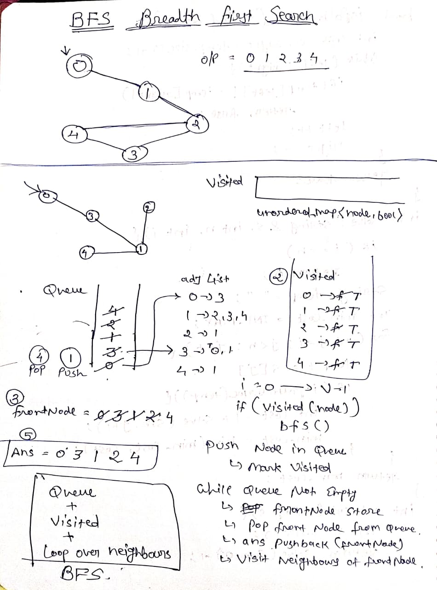
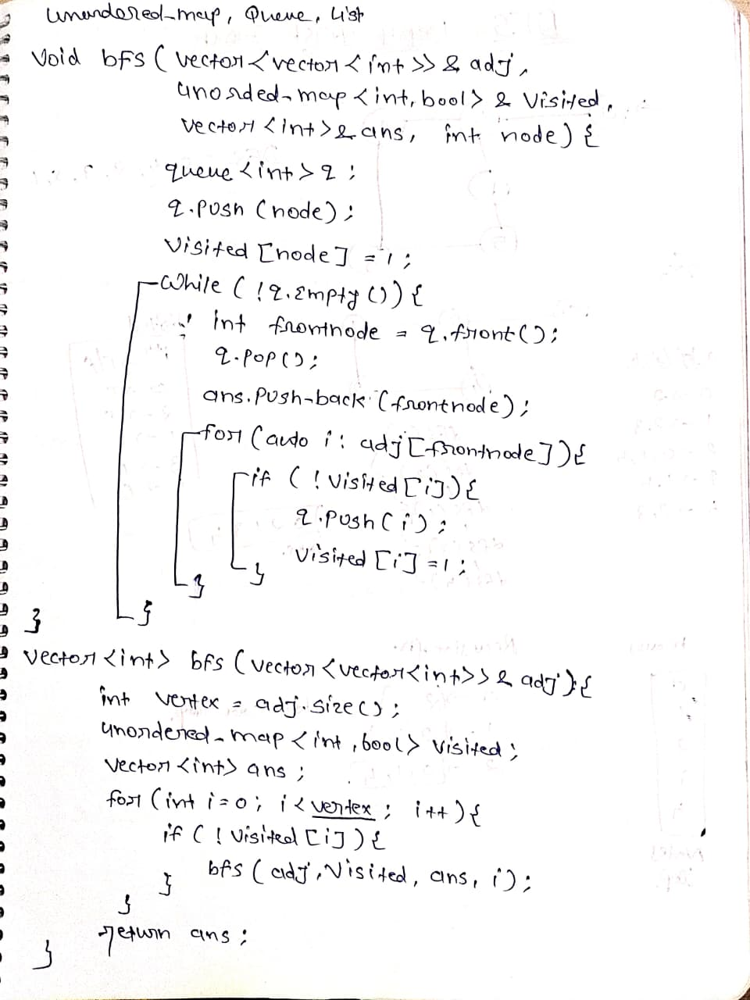

Breadth First Search (BFS) Traversal – Graph | C++
BFS (Breadth First Search) is one of the most important graph traversal algorithms. It explores nodes level by level using a queue (FIFO). Very common in interviews at companies like :contentReference[oaicite:0]{index=0}, :contentReference[oaicite:1]{index=1}, :contentReference[oaicite:2]{index=2}.
Problem Statement
Given an undirected connected graph represented using adjacency list, return BFS traversal starting from vertex 0. Traverse neighbors in the same order as given.
Intuition
- Use Queue (FIFO)
- Visit node → push neighbors
- Mark visited to avoid cycles
- Process level by level
Source: geeksforgeeks.org
Handwritten Notes
 
Dry Run Example
adj = [[2,3,1], [0], [0,4], [0], [2]]
Start → 0
Queue → 2,3,1
Then → 4
Output → 0 2 3 1 4
Approach
- Push start node (0) into queue
- Mark visited
- While queue not empty → pop and explore neighbors
- Add unvisited neighbors
Time: O(V + E)
Space: O(V)
C++ Code
class Solution {
public:
void bfsHelper(vector>& adj,
unordered_map& vis,
vector& ans,
int node) {
queue q;
q.push(node);
vis[node] = true;
while(!q.empty()) {
int frontnode = q.front();
q.pop();
ans.push_back(frontnode);
for(auto i : adj[frontnode]) {
if(!vis[i]) {
q.push(i);
vis[i] = true;
}
}
}
}
vector bfs(vector>& adj) {
int vertex = adj.size();
unordered_map vis;
vector ans;
for(int i = 0; i < vertex; i++) {
if(!vis[i]) {
bfsHelper(adj, vis, ans, i);
}
}
return ans;
}
};
Graph BFS Queue C++